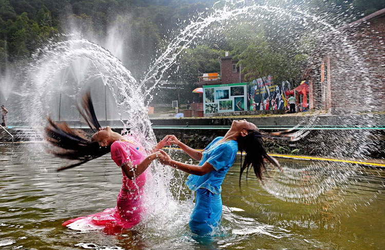
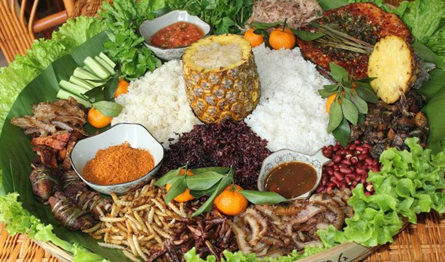
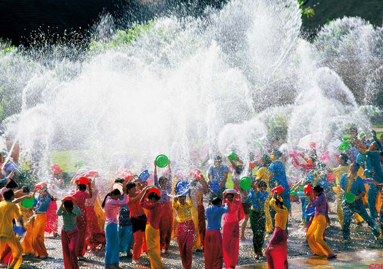

中国地大物博，五千年源远流长的文化中蕴含着许多的节日，众多节日当中有一些是非常需要“豁的出去”的，比如泼水节——泼水节泼水送祝福，广场上、小道上人们拿着盆互相泼啊泼，忽然一人惊叫“哪个王八蛋泼我”！懂道理的人语重心长的向他解释“泼你乃是祝福你”！怎奈猜中了结局却没猜中过程——“我说的是谁拿开水泼我”！！！
4月13日开始，傣族全体人民就开启了狂欢模式——泼水节到啦，那就是过年啊！不过这个节日并不是傣族的专属，傣族及泰语民族和东南亚地区都会庆祝这个节日。节日当天，人们清早起来便沐浴礼佛，之后便开始连续几日的庆祝活动，用纯净的清水相互泼洒，祈求洗去过去一年的不顺。其中一些人泼水还会泼到“癫狂”……
泼水节还包括“文泼”和“武泼”，可以根据自己的心情随意选择。文泼是比较传统的方式，用木盆装满清水，再用枝桠沾着水轻轻泼在别人身上。武泼则是用木盆装满水，把一盆直接全部泼出去，所以说我们通常理解的泼水就是武泼。在泼水节中谁被泼的水越多，象征着该年谁最幸福，也表达了傣族人民希望彼此平安幸福的寓意。
泼水节到来的时候，傣族人通常会忙着杀猪、杀鸡、酿酒，还要做许多“毫诺索”（年糕）以及用糯米做成的多种粑粑，在节日里食用。
泼水只是泼水节的其中一个项目，其实泼水节热闹着呢！除泼水外，还包括歌舞活动、浴佛、丢包、赛龙舟、放高升、放孔明灯、边交会等。
泼水节源于印度，是古婆罗门教的一种仪式，后为佛教所吸收，约在公元十二世纪末至十三世纪初经缅甸随佛教传入中国云南傣族地区。随着佛教在傣族地区影响的加深，泼水节成为一种民族习俗流传下来。
《车里》一书中有段记载：“元旦之晨，所有贵族平民，皆沐浴更衣，诣佛寺赕佛。妇女辈则各担水一挑，为佛洗尘，由顶至踵，淋漓尽致，泥佛几为之坍倒。浴佛之后民众便互相以水相浇，泼水戏之能能事”。这段记载虽不尽其祥，但已告诉人们，泼水是傣族过年时必须举行的一项活动。
1、每年4月13日——16日是傣族的泼水节，泼水节是傣族的新年；
2、泼水并不是泼水节的惟一活动，节日还会进行放高升、歌舞会等热闹非凡的活动。